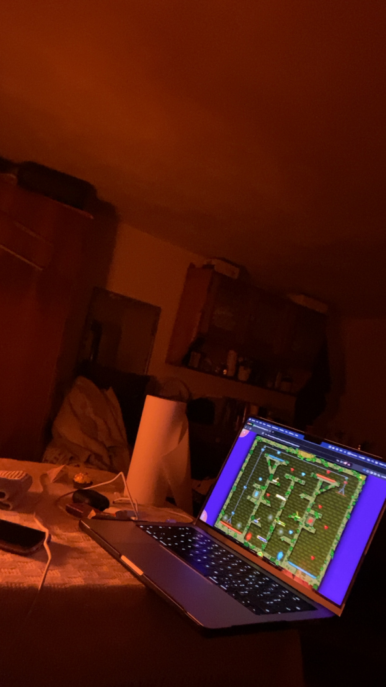

1 ianuarie 2025
Culcușul tău
💜 Te iubesc pentru modestia ta 💜
Prima mea vizita la casa familiei tale a fost una stresanta atât pentru mine, ca și pentru tine. A fost un punct de apropiere puternic, venind în locul în care ai
copilărit, dar și întâlnind persoanele cu care ai crescut. Ți-a fost frica ca te voi judeca, dar spre suprinderea ta, mediul din care vii mă face sa te iubesc cel
mai mult. Casa ta mi-a dat cea mai liniștită și ușoară stare pe care am simțit-o în ultima perioada. De ce? Simplitatea familiei tale m-a făcut sa mă simt la fel
de simplu.